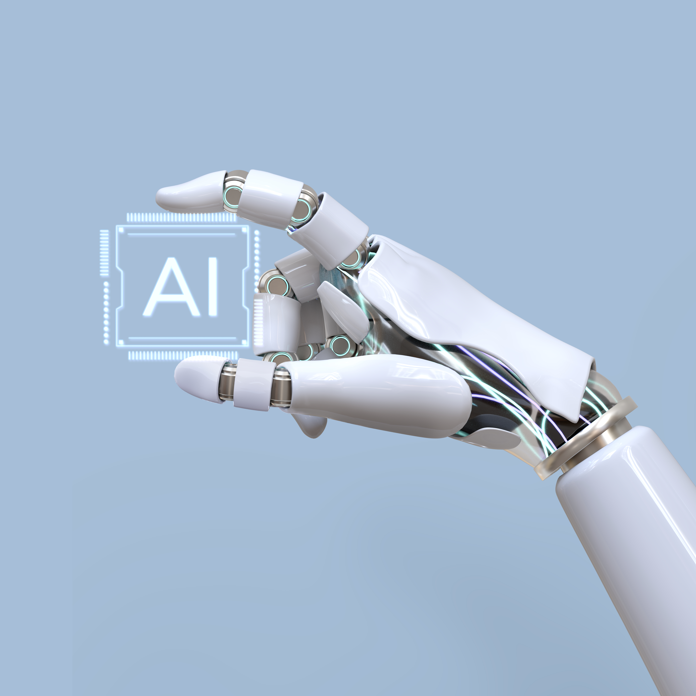

Nossas propostas:
Plataforma de Telessaúde Centralizada
A Plataforma de Telessaúde Centralizada do TechMed é a espinha dorsal de nosso sistema, oferecendo uma gama abrangente de serviços de saúde virtual. Integramos videochamadas, chat e consultas remotas para garantir atendimento médico acessível a qualquer momento e em qualquer lugar. Essa abordagem inovadora não apenas reduz a necessidade de deslocamento, mas também permite uma interação mais próxima entre pacientes e profissionais de saúde, promovendo um cuidado mais personalizado e eficiente.

Dispositivos de Monitoramento Remoto
No coração do TechMed estão os Dispositivos de Monitoramento Remoto, que capacitam os pacientes a monitorar suas condições de saúde em tempo real. Essa integração de tecnologia permite a coleta de dados vitais, proporcionando aos profissionais de saúde uma visão abrangente e imediata do estado de saúde dos pacientes. Isso não apenas agiliza a tomada de decisões clínicas, mas também permite intervenções precoces, especialmente em casos de condições crônicas.
Inteligência Artificial para Diagnóstico Preliminar
A implementação de algoritmos de Inteligência Artificial (IA) é um diferencial fundamental do TechMed. Esses algoritmos realizam análises preliminares de sintomas, permitindo diagnósticos rápidos e eficientes. Ao utilizar dados históricos e informações em tempo real, a IA do TechMed é uma ferramenta valiosa para profissionais de saúde, proporcionando insights adicionais que podem orientar decisões de tratamento.
Programas de Educação em Saúde Personalizados
Os Programas de Educação em Saúde Personalizados do TechMed são desenvolvidos para capacitar os pacientes a gerenciar proativamente sua saúde. Oferecemos recursos educacionais adaptados às necessidades individuais, entregues através da plataforma. Isso não apenas melhora a compreensão das condições de saúde, mas também incentiva a adoção de comportamentos saudáveis, fortalecendo a parceria entre pacientes e profissionais de saúde.